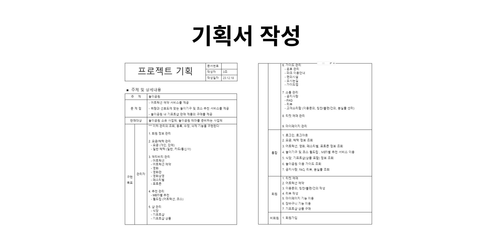
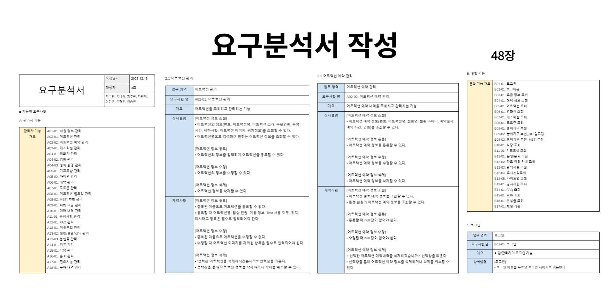
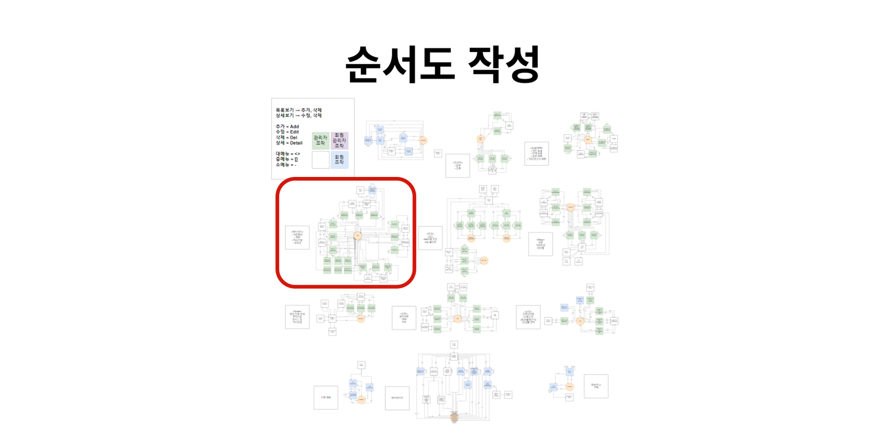
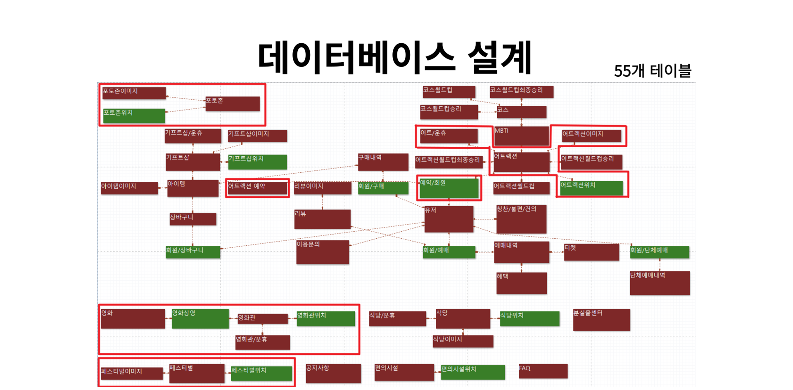
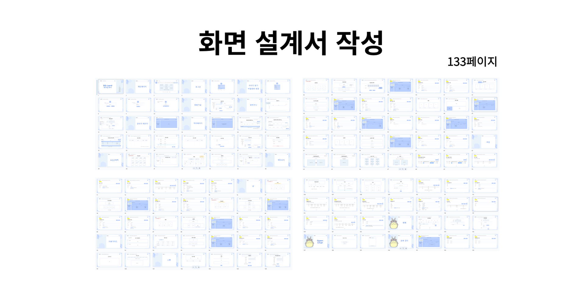
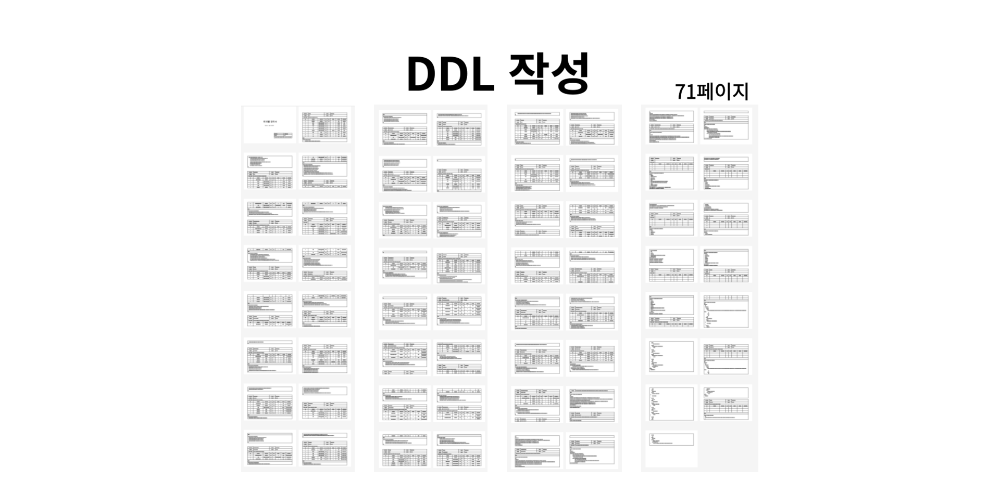
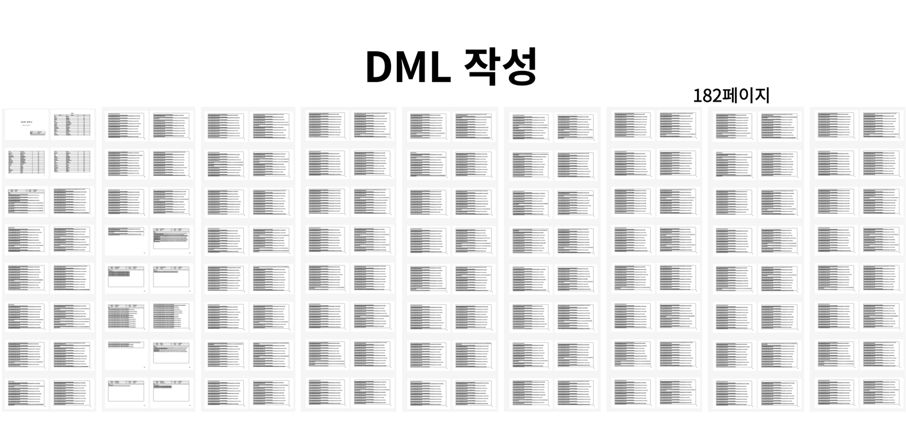
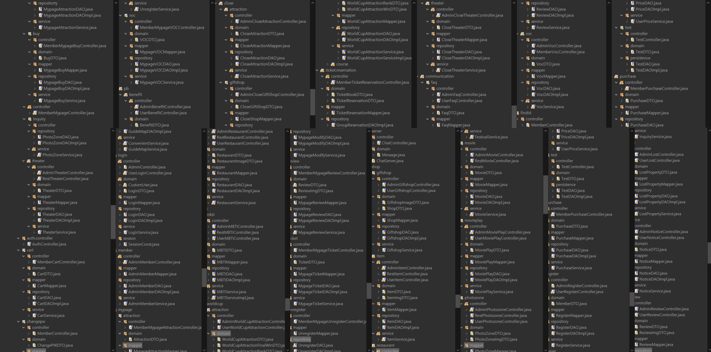
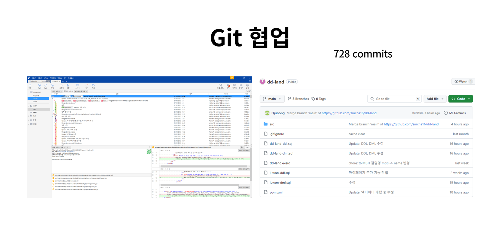
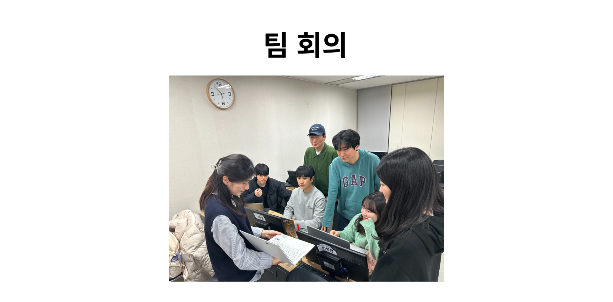

교육센터 관리 시스템
Project information
- 프로젝트명: 교육센터 관리 시스템
- 분류: Oracle Project
- 주제: 관계형 데이터베이스 교육 내용을 바탕으로 교육센터 운영을 위한 각종 데이터 입력, 수정, 삭제 및 조회 기능을 가진 데이터베이스를 구현하고자 하였습니다.
- 개발 환경: Oracle Database 11g, SQL Developer, DBeaver, eXERD, Draw.io, Google Drive
- 사용 기술: ANSI-SQL, PL/SQL
- 주요 기능: 관리자의 기초 정보 관리·교사 계정 관리·개설 과정 관리·개설 과목 관리·교육생 관리·시험 관리 및 조회·출결 관리 및 조회, 교사의 강의 스케줄 조회·배점 입출력·성적 입출력·출결 관리 및 출결 조회, 교육생의 성적 조회·출결 관리 및 출결 조회 등
- 담당 업무: 쿼리문 작성(관리자의 교육생 관리 기능 및 상담일지 관리 기능, 관리자·교사·교육생의 우수 교육생 관련 기능, 교사의 배점 입출력 기능), 상기 항목의 더미 데이터 생성
- 획득 역량: 관계형 데이터베이스 설계 및 운용
- 프로젝트 기간: 2023.09.11 ~ 2023.09.18 (8일)
- GitHub: https://github.com/NaraeP/Oracle-Project_education-center-management-system
기획 배경
: 주어진 요구 분석서를 바탕으로 교육센터 관리를 위한 데이터베이스 설계 및 운용
구현 목표
-
관리자/교사/교육생별 기능을 위한 쿼리문 작성
-
관리자
- 기초 정보 관리
- 교사 계정 관리
- 개설 과정 관리
- 개설 과목 관리
- 교육생 관리
- 시험 관리 및 조회
- 출결 관리 및 조회
-
교사
- 강의 스케줄 조회
- 배점 입출력
- 성적 입출력
- 출결 관리 및 출결 조회
-
교육생
- 성적 조회
- 출결 관리 및 출결 조회
-
관리자
-
기본 요구 분석 외 추가 요구 분석을 진행하여 추가 기능 구현
-
관리자
- 기간별 교육생 상담일지 관리
- 과목별 교재 관리
- 비품 등록 및 관리
- 출입카드 등록 및 관리
- 교육생 면접 및 선발 관리
- 기관 연계 회사 관리
- 교사 평가 항목 관리
- 교사 추천 도서 관리
- 질의 응답 관리
- 우수 교육생 조회
- 취업 명단 관리
- 학생 생일 조회
-
교사
- 추천 도서 입력 및 관리
- 교사 평가 조회
- 과제 등록 및 관리
- 질의 응답
- 비품 교체 신청
- 우수 교육생 조회
-
교육생
- 출입카드 조회 및 재신청
- 교사 평가
- 질의 응답 질의
- 과제 제출 및 조회
- 비품 교체 신청
- 우수 교육생 수상
- 교육생 지원금 수급
-
관리자
-
절차형 SQL 활용
- 프로시저, 사용자 정의 함수, 트리거 등의 다양한 절차형 SQL을 활용하여 쿼리문 작성
업무 분담
- 박나래: 교육생명단, 교육생수료명단, 교육생탈락명단, 교육생면접리스트, 교육생등록여부리스트, 상, 우수 교육생, 교육생 상담일지
- 이승원: 강의스케줄, 교육생수급내역, 과제리스트, 과제제출리스트
- 이연섭: 관리자, 교사명단, 취업명단, 질의/응답, 교사평가리스트, 평가리스트, 교재리스트, 교재상세리스트
- 차민재: 강의실리스트, 강의가능과목리스트, 교육생출결, 출결신청리스트, 과정리스트, 과정상세리스트, 과목리스트, 과목상세리스트
- 최진희: 도서리스트, 교사추천도서리스트, 시험리스트, 시험성적
- 허수경: 회사관리, 회사요구조건, 비품목록, 비품상세목록, 출입카드리스트, 출입카드재발급리스트
주요 구현 기능
산출물
- 요구분석서 (17장)
- 순서도
- 데이터베이스 설계(ERD)
- 테이블 정의서(DDL) (50장)
- 데이터 정의서(DML) (188장)
- ANSI-SQL Script (96장)
- PL/SQL Script (267장)
- PPT
- 요약본 (5장)
| 기획서 | 요구분석서 | 순서도 |
|---|---|---|
|  |  |  |
| 데이터베이스 설계 | 화면 설계서 | DDL |
|  |  |  |
| DML | ||
|  |
개발 과정
- 프로젝트 구조 설계
- Git 협업
- 팀 회의
| 프로젝트 구조 설계 | Git 협업 | 팀 회의 |
|---|---|---|
|  |  |  |
개발 후기
느낀점
Servlet/JSP를 통해 웹페이지가 구성되는 전반적인 흐름을 배웠는데 이를 바탕으로 직접 웹페이지를 구현하게 되어 쉽지 않았지만 즐거운 경험이었습니다.
프로젝트 초반에는 페이지 구성에 대한 흐름을 이해하기가 쉽지 않아 작업이 더뎠고, CSS를 활용하여 요소를 움직이는데 어려움을 겪었습니다. 하지만 조금 더 나은 페이지를 만들기 위해 부족한 부분은 공부하고 어떻게 내맘대로 요소를 컨트롤할 수 있을까 요리조리 궁리하고 고민한 끝에 프로젝트 후반부에는 초반과 다르게 자유자재로 컨트롤하는 모습을 볼 수 있었습니다.
또한 구현에 어려움을 겪었던 부분은 유사한 기능을 구현하는 팀원의 코드를 보고 배우며 적용해 볼 수 있었으며 각자 구현한 기능을 서로 확인하고 테스트하며 더 빠른 시간 안에 다양한 오류를 해결할 수 있었습니다. 이번 기회를 통해 개인보다 팀으로 작업함으로써 얻을 수 있는 여러가지 장점을 경험하였습니다.
시간이 부족해서 아쉬움이 많이 남는 프로젝트였지만, 이번 프로젝트를 통해 그동안 국비 교육 과정에서 배웠던 모든 기술들을 사용하여 결과물을 만들어 낼 수 있어서 스스로 많이 성장하고 배우고, 전체적인 흐름에 대해 깨달을 수 있었던 뜻깊은 프로젝트였습니다.
아쉬운 점
- 웹사이트 전반적인 CSS에 대한 아쉬움
- 어트랙션 예약 관리 기능 미구현
추후 개선 필요 사항
- 웹사이트 전반적인 CSS 개선
- 어트랙션 예약건에 대한 관리 기능 구현
- 관리자 액티비티 수정 페이지 내 기등록한 이미지 목록 조회/삭제 기능